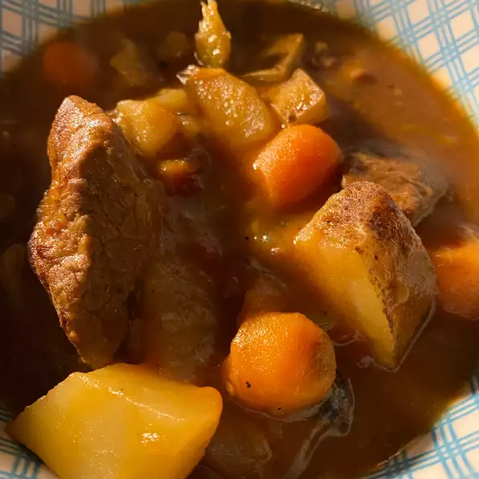

Beef Stew

Description
This hearty stew can be prepared in the morning and slow cooked all day for a hearty meal and a good finisher for the day!
Ingredients
- 3 tablespoons vegetable oil
- 2 pounds room temperature beef stew meat, cut into 1 to 1/2 inch cubes
- 1/2 cup all-purpose flour
- 1 yellow onion, roughly chopped
- 1 teaspoon minced garlic
- 1 (32 ounce) carton of low-sodium beef broth
- 1 can of crushed tomatoes
- 3 yellow potatoes, or more to taste, cubed
- 3 stalks of celery, chopped
- 1 cup baby carrots
- 1 teaspoon of Creole seasoning (such as Tony Chachere's)
- 1 teaspoon of dried basil
Steps
- Heat oil in a large pot over medium-high heat. Add meat, flour, onion, and garlic; cook and stir until browned, 10 to 15 minutes.
- Add broth, tomatoes, potatoes, celery, and carrots, then stir in Creole seasoning and basil. Bring to a simmer. Reduce heat to maintain simmer and cook, uncovered, until potatoes are soft, meat is tender, and gravy is thick, about 1 hour.